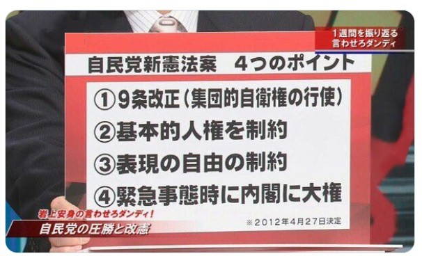

戦争とは、人と人が殺し合うことである。 軍隊はそのためにある。
支那事変が始まった時、私は小学校二年生でした。 出征兵士を校庭から駅頭まで皇御国(すめらみくに)を謳歌(おうか)し、滅私奉公(死生観)を内容とする軍歌で送ったものであった。
「この戦争は聖戦で東洋平和のための戦争だ。」
「満蒙は日本の生命線だ。」とか、
「日本は資源が少ないので海外に進出(侵略)し、皇国を興隆しなければならないのに、西洋人(毛唐)が妨害している。」
などと、学校の先生達に教えこまれ、一四才頃には軍国少年になっていた。
長剣(曹長刀)を吊りたくて、陸軍少年通信兵学校に入隊しました。
いま、考えてみると、御上の学校教育は、なんと恐ろしかった事かが判ります。
敗戦後の日本の状況で一番に苦しかったことは、食糧難ではなかったかと思っています。
さつま芋のつるや、じゃが薯も茎などを食べたこと、きょうは「金魚」だったことなどを語ったことを思い出します。
その当時、「平和」を唱いながら、侵略戦争を起こしたことは、一部の者が自分達だけの「平和」を築くためだったことが、今になって解ってきました。
あの様な苦痛と犠牲を強いられた人達がいるのに、いまでも、その当時の考えを持っている人達がいるのは残念でなりません。
戦争大抵の軍事行動は平和を目的にしています。
しかし現実の戦争は、
生きた人間を燃料とした火事のようです。
ダライ・ラマ14世（チベット仏教の指導者）
憲法9条改正へ【時事ドットコム速報 2025年10月20日】
自民、維新両党の合意書は、憲法９条改正と緊急事態条項創設に向け、両党の条文起草協議会を設置すると明記した。
２党のトップ間で「狂気」が必要だと合致した「自民党と日本維新の会、連立政権合意書」の全文はコチラ自民党の改憲草案では「主権が国民に存する」も「不戦の誓い」もありません。
とても詳しい「自民党の改憲草案」の解説はコチラ

緊急事態条項
「緊急事態条項」は時の政権が「緊急事態」だと一方的に宣言したが最後、立法権を含む全ての権力が内閣に集中し、憲法は無力化されます。 情報統制もされ、しかも無期限ですからウクライナのように選挙も行われなくなります。
人権も自由も無くなり、私財凍結や徴兵や政府にとって不都合な人々の令状なしの逮捕拘禁すらも可能となります。
「全権委任法」と同じです。「災害」や「感染症」を理由に発動すれば、一方的な情報で例えば「ワクチン強制接種」とかもありえます。
基本的人権、国民主権、戦争放棄、この三つを譲ってしまったら、「戦争ができる国」になり、あの悲惨な戦争体験は無かったことになってしまいます。
これが敗戦から８０年後の日本社会の光景です。